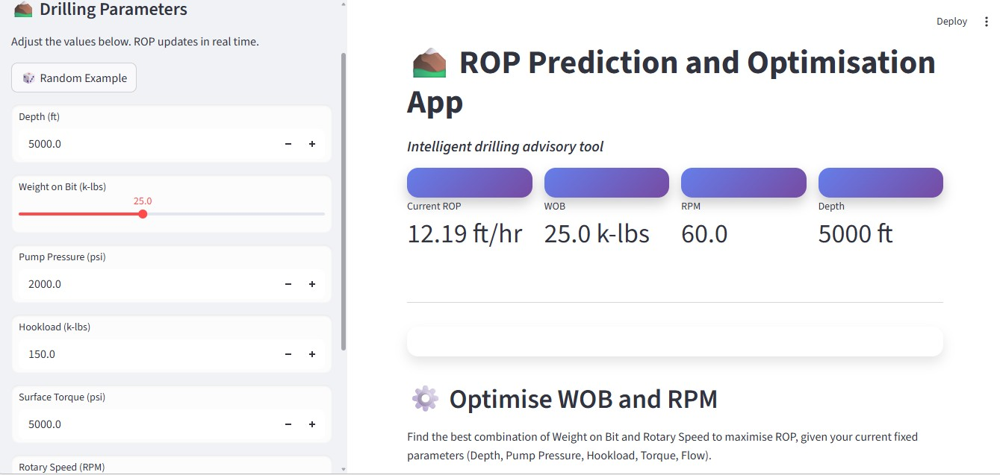

I’m an ambitious undergraduate student pursuing a Bachelor’s degree in Petroleum Engineering at the University of Mines and Technology (UMaT), Tarkwa, Ghana.
As a petroleum engineering student, I’m developing strong technical skills in drilling engineering, reservoir engineering and modelling, and production systems. I’m especially interested in how these skills can be applied to support cleaner and more efficient oil and gas operations as part of the global energy transition.
In addition to my engineering background, I’m also building solid skills in Python programming, which I apply in data analysis, machine learning, and problem solving related to petroleum engineering challenges. I believe combining programming with engineering knowledge is essential for innovation in today’s data driven energy landscape.
I’m naturally reflective and observant, which helps me stay focused and detail oriented in my work. Though I may come across as quiet or reserved at first, I’m fully engaged and committed behind the scenes. I believe in thinking before speaking and acting with intention, which allows me to contribute meaningfully in team environments.
I’m eager to apply my knowledge and skills to help meet the world’s energy demands while driving progress and innovation in the oil and gas industry. Through dedication, hard work, and teamwork, I aim to make a meaningful impact in the field and support the sustainable development of energy resources.
Please feel free to reach out if you would like to discuss opportunities, collaborations, or conversations about emerging trends and advancements in petroleum engineering and the evolving energy sector.
Python
Machine Learning
CMG Reservoir Simulation
Excel / Data Analysis

Machine learning model predicting drilling Rate of Penetration using operational parameters.

Research and technical presentation on gas pipeline construction and design.


Quality Assurance Intern
Drilling & Reservoir Training
Researcher – Gas Challenge
Tarkwa, Ghana
Email: quaysonebenezer45@gmail.com
Phone: +233 544 520829
LinkedIn